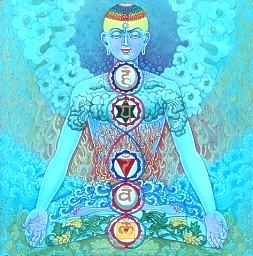
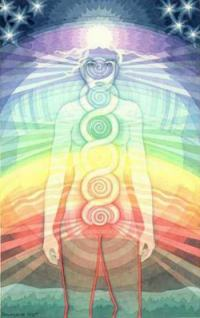
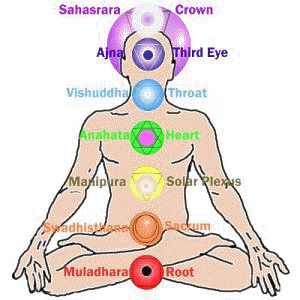
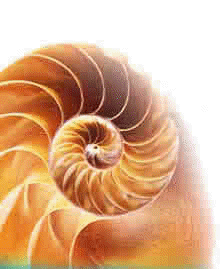

Chakra Healing with
Crystals
There are 7
notes in music, 7 major planets in astrology, 7 colours of
the rainbow, 7 traditional vowels (alpha to omega), 7 metals
of the alchemical process (base lead to pure gold) and 7
crystal systems - hexagonal, rhombohedral, triclinic,
monoclinic, orthorhombic, tetragonal and cubic.
The seven
colours of the rainbow correspond exactly and in order with
our chakra system. The same patterns can be seen in the
ratios of music, geometry, nature and the proportions of the
human body. They are the blueprints for the structure and
nature of this world and have been the subject of
investigation by mystics, yogis, seers and shaman since time
immemorial.
Chakras are
subtle, dynamic energy vortexes. Chakra kits can heal,
balance and energise this much neglected portion of out
make-up. The human body has 7 major energy centres, or
chakras. Chakra is the Sanskrit word for wheel or disc,
indicating both the shape and dynamic nature of these subtle
vortexes.
|
 |
Seventh/Crown:
white,
violet
- Amethyst
Sixth/Third Eye: indigo/dark
blue - Dumortiertite
Fifth/Throat:
light
blue - Blue Lace Agate
Fourth/Heart: green,
pink
- Rose Quartz
Third/Solar Plexus:
yellow - Yellow
Aventurine
Second/Sacral: orange
- Carnelian
First/Base: red,
black
- Black Obsidian
Chakra Kits >> |
Physical organs
and maladies in the area of a chakra can be treated with
stones of the colour relating to that chakra. It is not
surprising that our subtle energy centres are especially
connected to the organs in their location. An example of
this would be using green stones like chlorite or peridot to
treat heart or chest conditions, as that organ is influenced
by that chakra.
The logic is
that as gross matter manifests from subtle energy, so
strengthening the chakras in the problem area would be a
good start. Another point is that while the organ may be
healed conventionally, if an underlying energetic imbalance
is not addressed, the condition will probably return. A man
may have a heart attack and blood thinners keep him going,
but if the causes are not addressed, stress for example,
there's a good chance of more heart
problems.
|
7th:
Subtle element: Intelligence. God consciousness,
spiritual intelligence.
6th: Subtle element: Mind. Seeing, inner vision,
intuition, comprehension
5th: Element: Ether. Communication, expression,
higher will
4th: Element: Air. Love, surrender, balance,
acceptance, devotion
3rd: Element: Fire. Will, personal power,
perseverance, emotions
2nd: Element: Water. Physical vitality, sex desire,
earthly emotions
1st: Element: Earth. Physical body, survival, past
impressions |
 |
Chakra
Healing Technique
Find a quiet place where you are unlikely to
be disturbed for at least 10 minutes. Turn off your phone.
Lie on your back and breathe deeply and slowly as this
relaxes the body and slows all physiological functions. If
the sound of running water, certain music or other practices
relaxes you, include that technique at this point. Imagine a
healing white light entering the body on the in-breath and
all stresses and negativity leaving the body on the
out-breath. This is not just imagination, energy
follows thought. This prepares your body to receive maximum
benefit from the vibration of the stones.
|
 |
Place each stone on its respective
chakra. Both the location of the chakra and correct
colour are shown on the above chart. You may want to
imagine the chakras as glowing spheres of the
appropriate colour. As a prelude to meditation or
spiritual practice do this upwards, from chakra 1 to
7. For general health or to "set you up" for the
day, do the exercise downwards from chakra 7 to 1.
This stage is an extra and not essential if you
prefer to just relax or even snooze. The colour and
energy of the stones will naturally resonate with
each chakra, restoring structure, harmony and
balance to your entire system. Physiological change
of the gross body can take up to 3 months. Regular
use for this period will produce optimum results. |
Another amplification technique is to place a
hand (or hands) over each stone in turn for a few minutes
each. Visualise energy in the same colour as the stone,
passing through the stone and entering into the body until
you can clearly visualise that chakra as a large, glowing
sphere of the appropriate colour. Alternatively, use inward
pointing quartz crystals around each stone in turn. If you
have many quartz points, they can be placed around each
chakra stone, otherwise one chakra stone at a time and
preferably in conjunction with one of the above
visualisations.
|
 |
For physical problems, concentrate on
the chakra closest to the problem area – for
example, the heart chakra for respiratory ailments.
Similarly, concentrate on the chakra that governs
qualities you may want to work on or develop - see
the keywords below. An example of this would be
working with the 3rd chakra to help clear
emotional issues. Have a clear intention and mental
“picture” of your desired result.
Remember to briefly
cleanse all your crystals in cold running water
after each session. Placing them on the earth or a
quartz cluster occasionally, preferably in sunlight,
will keep their energies strong and pure. |
|